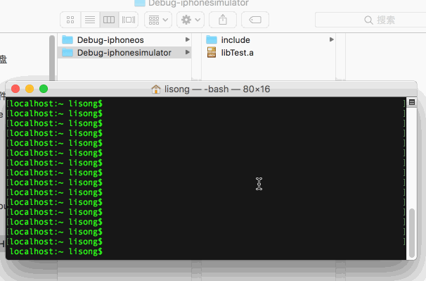
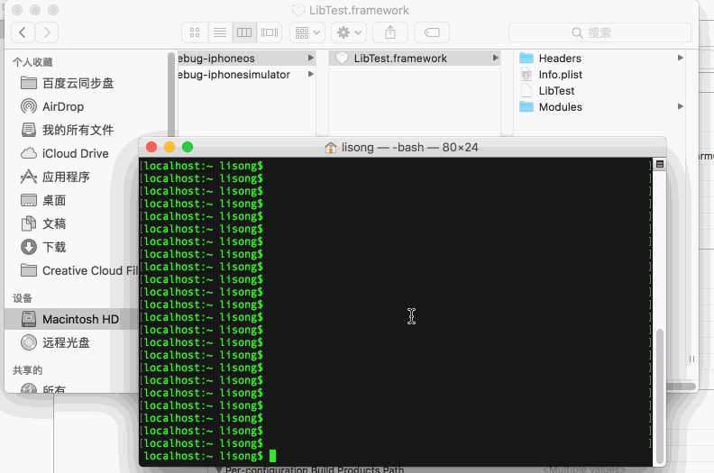

这里主要介绍查看静态库与动态库的区别，查看他们支持的平台架构，以及架构的拆分与合并，和上架APP Store需要注意的事项
静态库：.a 和 .framework
动态库：.dylib 和 .framework
注意：两者都有framework的格式
静态库：链接时，静态库会被完整地复制到可执行文件中，被多次使用就有多份冗余拷贝
动态库：链接时不复制，程序运行时由系统动态加载到内存，供程序调用，系统只加载一次，多个程序共用，节省内存
需要注意的是： 项目中如果使用了自制的动态库，不能被上传到AppStore
| CPU架构 | 机型 |
|---|---|
| i386 | iPhone4s-iPnone5 |
| x86_64 | iPhone5s-iPhone X |
| CPU架构 | 机型 |
|---|---|
| armv7 | iPhone3gs-iPhone4s |
| armv7s | iPhone5-iPhone5c |
| arm64 | iPhone5s-iPhone X |
lipo -info 静态库名字
lipo -info framework下的二进制文件名字
1、动态库在 最低支持iOS 8.0以上的项目可以上架
2、需要删除i386、x86_64的架构包，否则上传ituns Connection构建版本时会报错，苹果强制要求
以环信为例,先cd到HyphenateLite.framework目录下
lipo HyphenateLite.framework/HyphenateLite -thin armv7 -output HyphenateLite_armv7
lipo HyphenateLite.framework/HyphenateLite -thin arm64 -output HyphenateLite_arm64
lipo -create HyphenateLite_armv7 HyphenateLite_arm64 -output HyphenateLite
mv HyphenateLite HyphenateLite.framework/